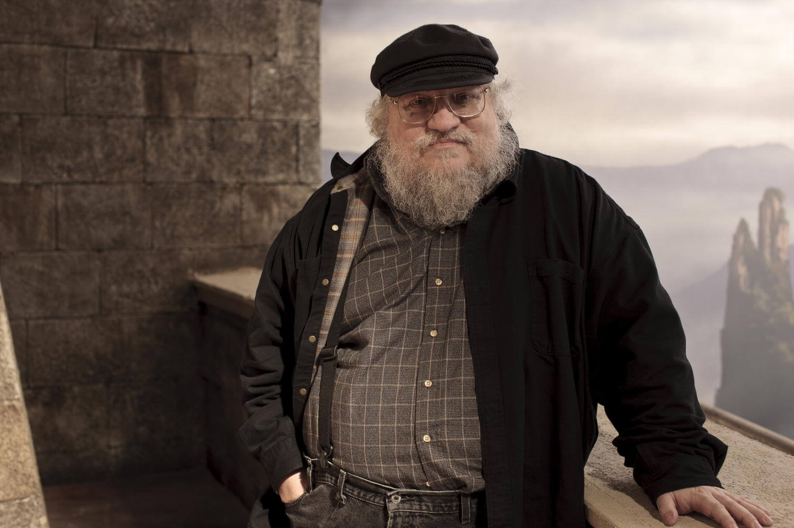

George R.R. Martin
Es el mayor de tres hermanos. Creció en una familia trabajadora, su padre era estibador de ascendencia italo-germana, y su madre, de ascendencia irlandesa. Desde la infancia se interesó por la lectura y se convirtió en un precoz escritor de relatos. Posteriormente cursó estudios universitarios de periodismo en la Northwestern University de Evanston (Illinois), donde se graduó en 1971. Tras terminar sus estudios, realizó la prestación social sustitutoria (es objetor de conciencia), dirigió torneos de ajedrez y trabajó como profesor de periodismo en el instituto Clarke de Dubuque, Iowa (1976-1978). Fue un prolífico autor de obras cortas de ficción en los años 1970 y su obra fue premiada con varios premios Hugo y Nebula. Al final de esta década comenzó a publicar sus primeras novelas siendo una de las más populares la primera de ellas: Muerte de la luz (Dying of the Light, 1977). Dicho éxito le permitió dedicarse en exclusiva a la literatura, donde mezcla los géneros de ciencia ficción, fantasía y terror.
Tras un corto matrimonio con Gale Burnick (1975-1979), comenzó a compaginar la escritura con su trabajo en Hollywood, motivado en parte por la mala marcha de su cuarta novela El rag del Armagedón (The Armageddon Rag, 1983). Durante la década de 1980 y principios de la década de 1990, trabajó como guionista de varias series de televisión (The Twilight Zone, 1986 y La Bella y la Bestia, 1987) y como editor de la serie de antologías de historia alternativa sobre la Segunda Guerra Mundial, Wild Cards. En 1987 publicó Los viajes de Tuf (Tuf Voyaging, 1986), una colección de relatos de ciencia ficción, considerada una de las obras más destacadas de su primera etapa. En 1996 dejó Hollywood y se retiró a Santa Fe (Nuevo México), donde regresó al mundo de la literatura comenzando con la novela Juego de tronos (A Game of Thrones, 1996) el ciclo de novelas Canción de hielo y fuego, con la que ha obtenido gran éxito de crítica y ventas. En 2011 se casó con su antigua amante Parris McBride. En 2013 adquirió el cine Jean Cocteau de Santa Fe y el Coffee House, cerrado desde 2006, y los restauró y modernizó, transformando a este último en un café-museo con exposiciones itinerantes de arte. Ideológicamente demócrata, ha defendido siempre a los presidentes de este partido y sus políticas. Actualmente, está escribiendo el sexto libro de la saga Canción de hielo y fuego: Vientos de invierno. Esta saga de novelas es, sin duda, la que lo ha catapultado a lo más alto de su carrera como escritor.